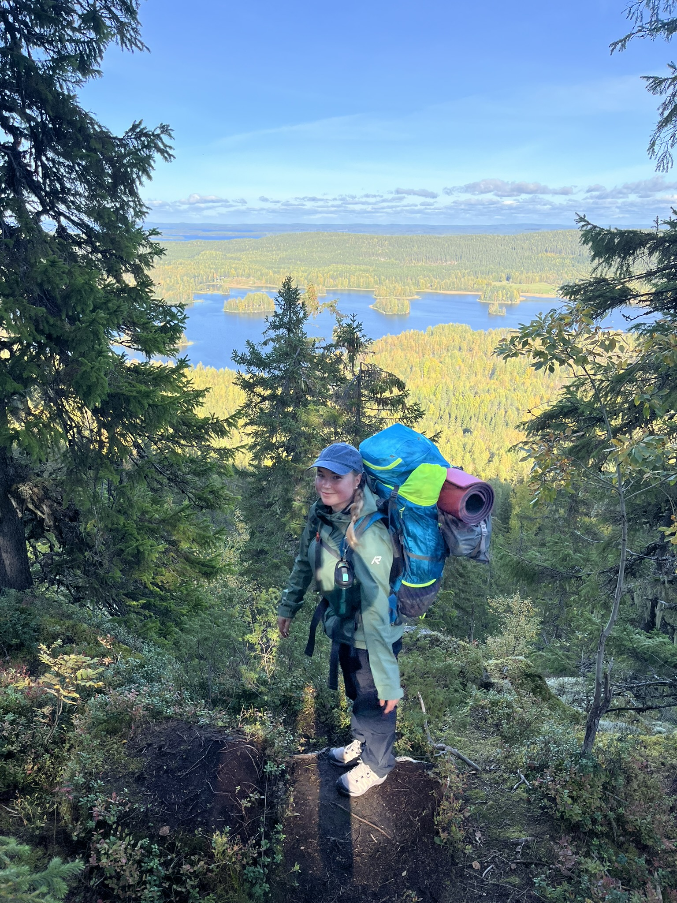
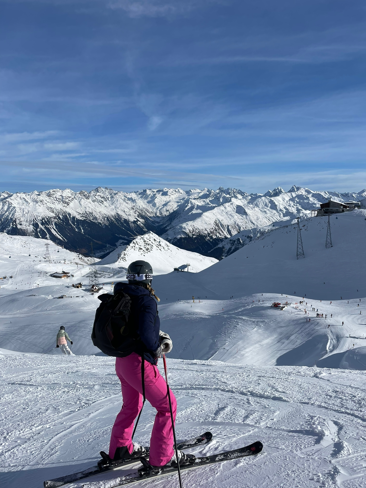
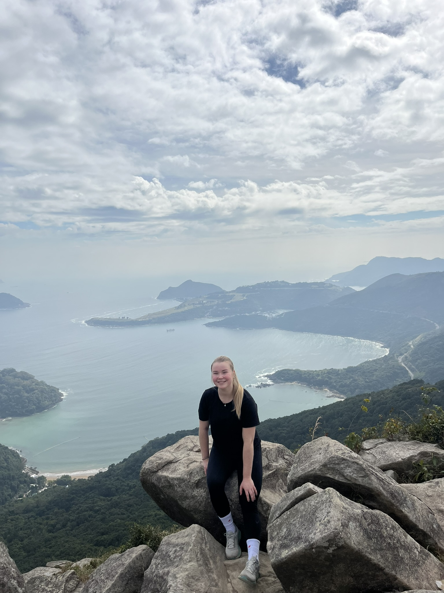

I’m an ambitious and curious person who loves learning new things and taking on challenges.
I have a particular interest in how data science, AI, and intelligent software solutions can be used to solve real-world problems.
With a background in tech and an upcoming master's degree in Business, I am especially passionate about how technology can be applied in business contexts to create value and drive innovation.
I’m always eager to find new opportunities in these fields and continue expanding my horizons.
Studies
I am a final-year master’s student at Aalto University, majoring in Machine Learning, Data Science, and Artificial Intelligence.
In addition, I am starting a second master's degree this fall, majoring in Information Service and Management.
I'm excited to combine my technical skills with business strategy to create innovative solutions that make a positive impact.
Prior to this, I completed my bachelor’s degree in Bioinformation Technology with a minor in Computer Science in spring 2025, graduating with honors (GPA 4.2/5.0).
Work Life
I am currently a Software Developer Intern at Ericsson
(Summer 2026), where I focus on machine learning and AI. In this role, I build intelligent
software solutions to address complex, real-world challenges while gaining insight into the strategic future
of technology. I thrive in companies that aren't afraid to aim high and think ahead.
My background also includes roles as a software developer and a teaching assistant at Aalto University,
providing me with a unique blend of industry experience and academic insight.
Hobbies and Interests
I believe that staying active outside of work and studies is key to maintaining a balanced, creative mindset.
I love outdoor activities like hiking, golf, and skiing, as well as racket sports like badminton and tennis.
I'm also big into CrossFit and occasionally work as a coach, which is a fun way to help others reach their goals.



Projects
ML and web app project for stress detection based on Reddit and Twitter posts –
A machine learning project with an interactive application where I apply and practice natural language processing (NLP).
I compare different machine learning models for stress detection based on social media posts and explore key findings from the text data.
In addition to basic machine learning models, I also apply transformer-based language models (LMs) such as BERT from Hugging Face.
You can try my trained LM for stress detection here by entering your own prompt (ideally a social media post).
It's not perfect, but with medium to large texts (over 5 words), it works quite well!
Machine learning project for predicting online education outcomes –
I am particularly interested in which factors influence online education outcomes, as COVID-19 placed my generation in online learning.
This was one of my first machine learning projects, where I trained several different models from scikit-learn to predict online education outcomes.
I compared the models to see how well they performed in the classification task.
Data visualization library
– This was my very first computer science project.
I designed it with PyQt6, and while the code is quite low-level, it taught me a lot about building applications from scratch.
Bachelor's thesis – The topic of my thesis was Contrastive Learning for Molecular Property Prediction Tasks.
The thesis taught me about different deep learning models and how they are applied to real-world problems.
It received a grade of 5/5.